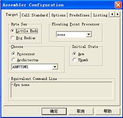
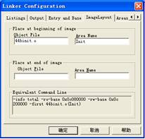
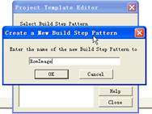
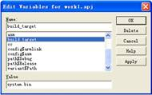
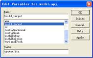
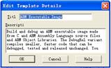
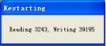
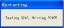

ITEEDU
五、步骤
1．建立工程文件
（1）运行ARM SDT 2.5集成开发环境（ARM Project Manager）。选择File|New命令，在对话框中选择Project选项卡，单击“确定”按钮后弹出New Project对话框，如图1-1所示，Type为工程模板类型，这里选择ARM Executable Image，然后输入工程名和所在路径。单击OK按钮后新建一个工程文件。
（2）在新建的工程中，如图1-2所示，选中工程树的“根部”。使用命令Project|Tool Configuration for work1.apj|<asm> = armasm|Set，对整个工程的汇编进行设置。
 图1-1 新建一个工程文件
图1-1 新建一个工程文件  图1-2 对整个工程的汇编进行设置
图1-2 对整个工程的汇编进行设置
（3）因为开发板上的嵌入式处理器ARM7TDMI没有浮点处理器，所以，如图1-3所示，在弹出的对话框中设置Floating Point Processor为none，并保持其他的设置不变。
（4）选中工程树的“根部”，通过Project|Tool Configuration for work1.apj|asmlink|Set命令，对整个工程的连接方式进行设置。
（5）在弹出的对话框中，打开Entry and Base选项卡，如图1-4所示，设置连接的Read-Only（只读）和Read-Write（读写）地址。地址0x0c080000是开发板上SDRAM的真实地址，是由系统的硬件决定的；0x0c200000指的是系统可读写的内存地址。也就是说，在0x0c080000～0x0c1fffff之间是只读区域，存放程序的代码段，从0x0c200000开始是程序的数据段。
 图1-3 设置Floating Point Processor为none  图1-4 设置连接的地址
图1-4 设置连接的地址
提示：用户可以修改这两个数值来决定程序存储区的大小和数据存储区的大小。但应注意SDRAM为8MB，地址范围为0x0c000000～0x0c7fffff。其中0x0c080000之前的空间是留给LCD显示缓存区的。
（6）打开Linker Configuration对话框中的ImageLayout选项卡，如图1-5所示，设置程序的入口模块。指定在生成的代码中，程序是从44binit.s开始运行的，这里填写44binit.s对应的目标文件44binit.o，Init是该汇编文件中的代码段名字。
（7）选择Project|Edit Project Template命令，系统弹出Project Template Editor对话框。在该对话框中可以看到一系列步骤名称。SDT在处理工程文件时是按这些步骤完成的，每个步骤设定了对应的操作，以及该操作的输入、输出和命令行等。读者可以选择已有的步骤，单击Edit按钮打开该步骤设置对话框，观察每个步骤所实现的功能。例如：步骤Compile是把.c和.h文件编译成.o文件的，而步骤Link则就是把.o文件和 .alf文件连接生成.axf文件的。在这些步骤中的设置建议保留默认值。但这里缺少一个从.axf文件生成所需的.bin文件的步骤，所以使用New按钮，为编译器新建一个步骤，如图1-6所示，取名为RomImage。
 图1-5 设置程序的入口模块 图1-6 为编译器新建一个步骤
（8）按照如图1-7的内容设置步骤RomImage的内容。使编译器编译的时候可以生成system.bin文件，这就是系统的可执行文件。可以看出该操作的输入是当前工程的.axf文件，所在位置是Image，输出是system.bin，位置在Eprom，操作由fromelf组件完成，命令行是fromelf -nozeropad <$projectname>.axf -bin system.bin。这里的Image和Eprom可以在设置好
后的工程窗口中看到。步骤名称和输出位置名称并不要求一致。
提示：在文本框中输入文字后必须单击Add按钮添加到上方列表框中，否则单击OK按钮后该设置信息丢失。
（9）选择Project|Edit Variables for work1.apj命令，系统弹出Edit Variables for work1.apj对话框。列表框中是该工程的一些变量，读者也可以选择某个变量名，在Value文本框中可以看到其值。$ProjectName变量设置的是工程名，可以和工程文件的文件名不一致，Image下的.axf文件将以此命名。这里注意一下变量config$armlink的值，应该是-info.total#total -ro-base#0xc080000 -rw-base#0xc200000 -first#44binit.o(init)，和前面对armlink的设置一致。而变量config$asm的值是-fpu#none。这里需要将build_target变量的值设为system.bin，编译器在生成此文件后步骤执行完毕，如图1-8所示。
提示：选择某个变量并更改其值后，必须单击Apply按钮使其生效，如果更改完毕后又选择其他变量，则该设置将无效。
 图1-7 设置RomImage的内容 图1-8 设置build_target变量
图1-7 设置RomImage的内容 图1-8 设置build_target变量
（10）选中工程树中的DebugRel子树，按Delete键删除。
提示：在系统工程树中Debug子树是应用程序的调试版本，在生成的目标代码中，包含了系统的调试信息。Release子树是应用程序的发行版本，生成的代码中不包括调试信息，而且编译器还针对速度和代码的大小进行优化。DebugRel子树是一个折衷版本，通常用不到，所以，在这里删除。
（11）回到Project Template Editor对话框中，单击Edit Detail按钮，在弹出的对话框中可以重新命名模板，如图1-9所示。重新命名模板后可以保存该工程，并把该空工程（还没有添加工程文件）复制到SDT安装路径下的Template目录下，下次新建工程时可以在New Project对话框中的Type列表框中看到该模板，使用该模板无需重新设置工程参数。
（12）至此，工程文件设置完毕。包括对armlink和armasm的参数设置，新建生成system.bin文件的编译步骤和对应变量。建议将该设置后的工程文件作为模板保存，以方便日后使用。同时注意上文关于操作的提示，以前多数用户建立模板失败的原因可能就在于操作上的失误。
Sources命令，把STARTUP目录下的*.S和*.c文件加入到工程中。
 图1-9 重新命名模板 图1-10 加入工程的源文件
图1-10 加入工程的源文件
（14）选中工程树中Debug子树的IncludedFiles选项。通过Project|Add Files to IncludedFiles命令，把STARTUP目录下的所有*.h文件都加入工程中。
（15）在需要用到库文件的工程中，选中工程树中Debug子树的Libraries选项。通过Project|Add Files to Libraries命令，把*.ALF库文件加入工程中。
（16）双击工程树中Debug子树的Sources选项中的main.c，打开main.c文件。下面是Main()函数中的内容，程序向LCD和串口输出字符串“Hello world！”。
int Main(int argc, char **argv)
{
ARMTargetInit();
LCD_Init();
LCD_ChangeMode(DspTxtMode); //转换LCD显示模式为文本显示模式
LCD_Cls();//文本模式下清屏命令
LCD_printf("Hello world!\n"); //向液晶屏输出
Uart_Printf("\nHello world!\n"); //向串口输出
while(1);
}
读者可以分别打开其他的源文件，了解该系统运行的基本知识。这个程序没有用到操作系统，只是简单地说明工程的开发过程，带有操作系统的实验将在“μC/OS-II在ARM处理器上的移植及编译”实验之后出现。
2．进行程序的在线仿真、调试
（1）回到ARM Project Manager对话框，选中工程树中的Debug子树，通过Project |
Build work1.apj“Debug”命令（或者工具栏中的相应按钮）编译整个工程。
（2）把ARM的JTAG仿真器连接到PC机的并行口和开发板上，打开开发板的电源，运行仿真器的驱动程序UarmJTAG.exe。
（3）使用Project|Debug work1.apj“Debug”命令（或者工具栏中的相应按钮）启动ARM Debugger软件调试程序。
（4）在ARM Debugger中，通过Options|Configure Debugger命令设置仿真器。如图1-11所示，在弹出的对话框中，设置Target Environment为Remote_A。
（5）单击Configure按钮，按照如图1-12所示，设置仿真器。
 图1-11 设置仿真器
图1-11 设置仿真器 图1-12 设置仿真器
图1-12 设置仿真器
（6）出现下面的提示信息以后，单击“是”按钮，ARM Debugger开始通过仿真器装载程序，如图1-13所示。
 

图1-13 装载程序
注意：第（4）、（5）步设置好后，以后再调试的时候直接进行到第（6）步，不需要再设置。当不能进行第（6）步时，重复第（4）和第（5）步。
（7）装载完毕以后，通过Execute|Go命令（或者工具栏中的相应按钮）运行程序。
（8）当程序运行时，可以使用Execute|Stop命令（或者工具栏中的相应按钮）暂停程序的运行。如图1-14所示，在Execute窗口中将显示出程序暂停的位置。
 图1-14 显示程序暂停的位置
图1-14 显示程序暂停的位置
（9）通过Execute|Step命令（或者工具栏中的相应按钮）可以单步运行程序。也可以使用Step In、Step Out命令进入或者跳出函数的调用。
（10）在程序停止运行的时候，选择View|Source Files命令，可以打开如图1-15所示的源程序列表窗口，双击列表中的文件名可以查看相应的源文件。
注意：查看源文件时，有时可能会出现看不到自己的源文件的情况，这时要将工程重新强制编译一下。
（11）在源文件列表中打开main.c文件。选择源文件中的某一行，单击鼠标右键，如图1-16所示，用Toggle Breakpoint命令可以设置断点，使程序运行到这里停下来。
（12）使用在View菜单下的Registers、Variables和Memory命令可以查看工作寄存器或者内存变量。读者可以逐一地尝试，为以后调试程序打下基础。
 图1-15 查看源文件
图1-15 查看源文件  图1-16 设置断点
图1-16 设置断点